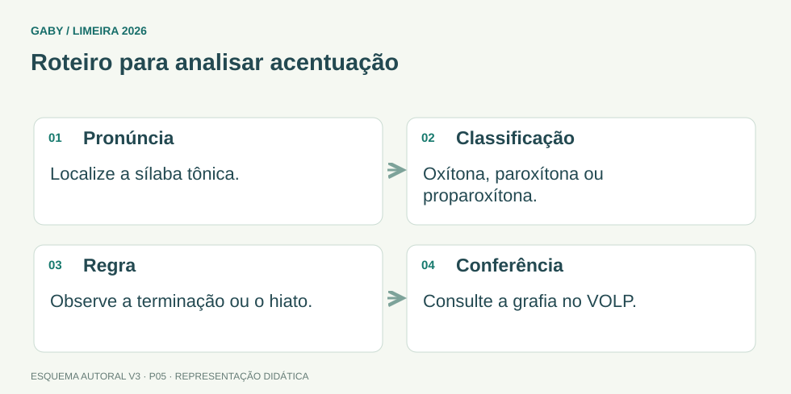

Objetivos do módulo
- Reconhecer grafias corretas de palavras frequentes em provas.
- Aplicar regras de acentuação de oxítonas, paroxítonas e proparoxítonas.
- Distinguir pares como “por que/porque/por quê/porquê”.
Roteiro para analisar acentuação

Descrição em texto do esquema
- Pronúncia: Localize a sílaba tônica.
- Classificação: Oxítona, paroxítona ou proparoxítona.
- Regra: Observe a terminação ou o hiato.
- Conferência: Consulte a grafia no VOLP.
Oficina visual · aplique o esquema
Classifique e justifique os acentos de “café”, “lápis” e “médico”.
Atividade autoral complementar da V3. Registre sua resposta; a resolução está no arquivo de gabarito e revisão.
Mapa do conteúdo
1. Ortografia é convenção
A ortografia padroniza a escrita. Nem sempre a pronúncia permite deduzir a grafia; por isso, leitura e contato com palavras recorrentes são essenciais. Em concurso, aparecem trocas de s/z, x/ch, g/j, além de palavras parônimas.
2. Acentuação básica
| Classe | Regra central | Exemplos |
|---|---|---|
| Oxítonas | acentuam-se terminações a(s), e(s), o(s), em(ens) | café, cipó, também |
| Paroxítonas | acentuam-se terminações diferentes das mais comuns; há regras específicas | fácil, órgão, júri |
| Proparoxítonas | todas são acentuadas | lâmpada, público, matemática |
3. Hiato e ditongo
Em hiatos, “i” e “u” tônicos podem receber acento quando formam sílaba sozinhos ou com “s”, observadas exceções. Exemplos tradicionais: saída, baú. Ditongos abertos em palavras oxítonas como “herói” e “chapéu” recebem acento; em paroxítonas, formas como “ideia” não recebem mais acento.
4. Por que, porque, por quê, porquê
| Forma | Uso típico | Exemplo |
|---|---|---|
| por que | pergunta ou equivalente a “por qual razão” | Por que faltou? |
| porque | resposta/explicação | Faltou porque adoeceu. |
| por quê | antes de pausa/pontuação | Você faltou por quê? |
| porquê | substantivo, normalmente com determinante | Explique o porquê. |
5. Há x a
“Há” pode indicar existência ou tempo decorrido: “há vagas”; “há dois anos”. “A” pode marcar tempo futuro ou distância: “daqui a dois dias”; “a três quilômetros”.
Exemplos resolvidos passo a passo
Exemplo 1
Situação: Complete: “Não sei ___ o documento não chegou; gostaria de entender o ___.”
Exemplo 2
Situação: “Daqui há três dias” está correto?
Pegadinhas e erros frequentes
- Acentuar “ideia” e “assembleia” pelas regras antigas.
- Confundir há (passado/existência) com a (futuro/distância).
- Usar “porquê” sem função de substantivo.
Resumo de prova
- Todas as proparoxítonas são acentuadas.
- Oxítonas e paroxítonas seguem terminações específicas.
- “ideia” não tem acento.
- Há = existência/tempo passado; a = futuro/distância.
- Domine os quatro porquês.
Exercícios do módulo
Resolva sem consultar o arquivo de gabarito. As questões são autorais e construídas para treinar os conceitos do edital.
- excessão
- eceção
- excessão
- exceção
- só recebem til
- são acentuadas
- não são acentuadas
- dependem de plural
- idéia
- ideia
- assembléia
- heroi
- por quê
- por que
- porquê
- porque
- porquê
- por quê
- por que
- porque
- por quê
- por que
- porque
- porquê
- Daqui há duas horas sairemos.
- Daqui a duas horas sairemos.
- Há duas horas sairemos.
- A duas horas chegamos ontem.
- existência
- distância
- posse
- futuro
- facil
- publico
- café
- lapis
- sofá
- fácil
- café
- também
Quando terminar, abra Português 05 - Ortografia e Acentuação - Gabarito e Revisão.
Checklist de domínio
- ☐ Reconhecer grafias corretas de palavras frequentes em provas.
- ☐ Aplicar regras de acentuação de oxítonas, paroxítonas e proparoxítonas.
- ☐ Distinguir pares como “por que/porque/por quê/porquê”.
Meta do módulo: 80% ou mais nas questões, sem depender de consulta.
Referências e conteúdos auxiliares
- Presidência da República — Manual de Redação, 3ª ediçãoClareza, redação oficial, concordância, regência e pontuação. Referência de apoio; modelos locais podem ter regras próprias.
- Academia Brasileira de Letras — VOLPConsulta de grafia e classe gramatical. O vocabulário não é um dicionário de significados.
Referências externas de apoio consultadas para a V3 em 27/09/2026. A origem das questões é o material autoral do projeto; estes links não indicam que uma instituição publicou ou validou os exercícios. As páginas externas precisam de internet. Em informática, confira a versão do programa; em legislação, observe o recorte e as regras de atualização do edital.